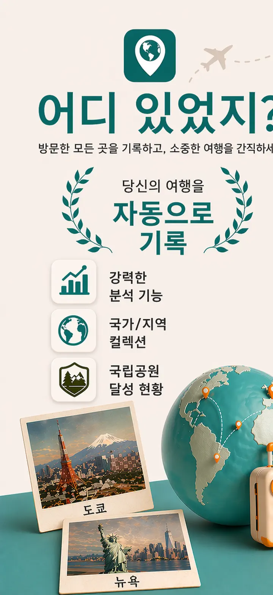
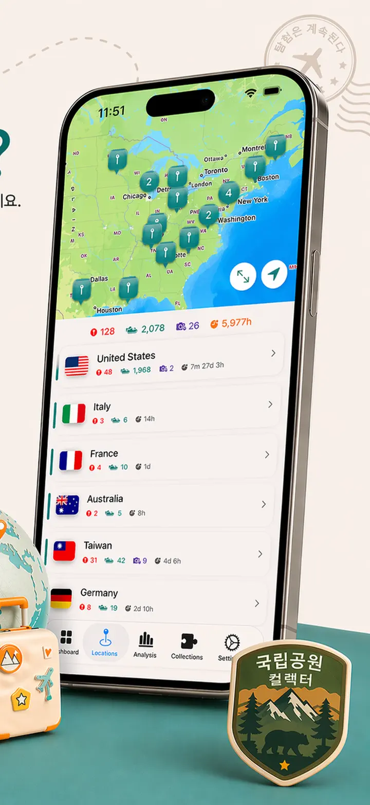
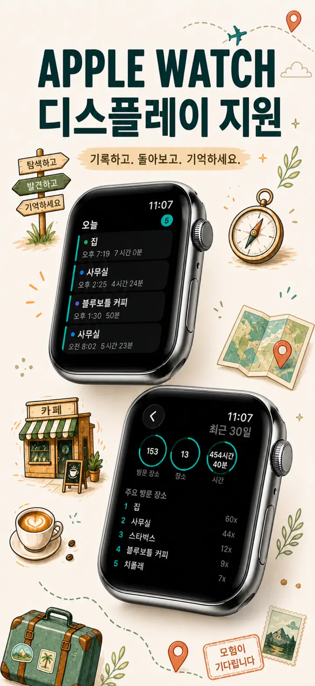
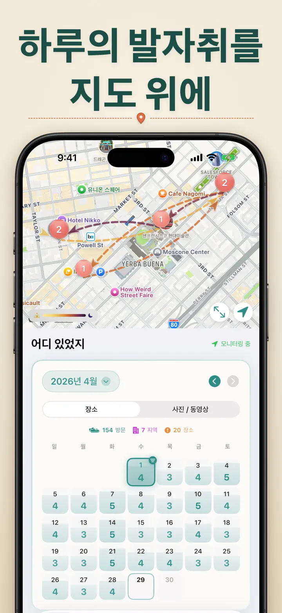
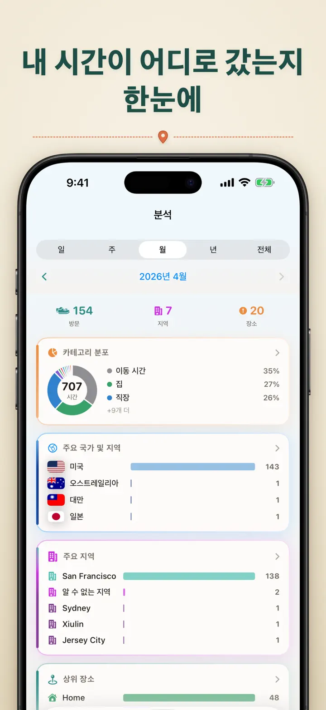
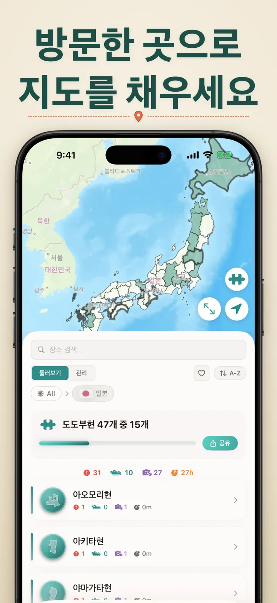
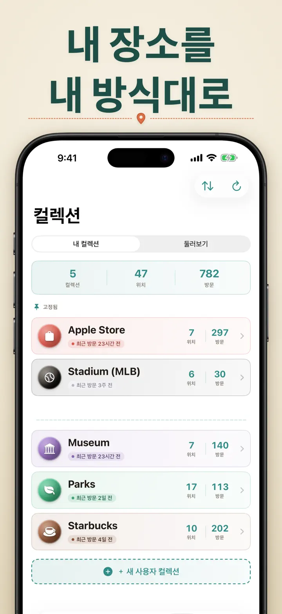
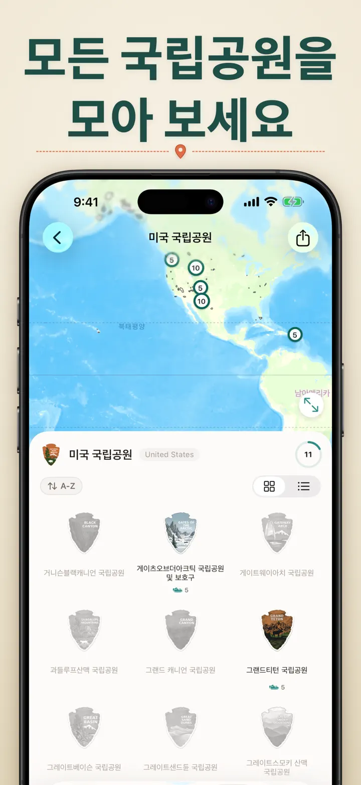
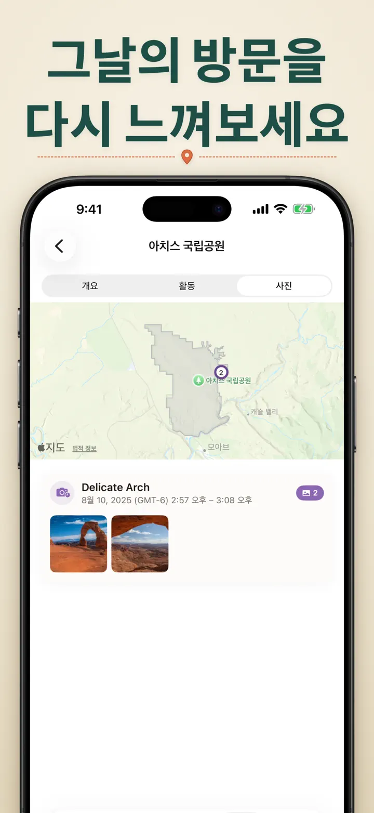

어디 있었지?
장소/사진 기록과 발자취 추적
신규: 일본 이치노미야 신사 103곳, 각각 나무에 새긴 배지. 방문 자동 기록과 나만의 타임라인을 모두 기기 안에서.
App Store에서 다운로드
앱 정보
어디 있었지 — 나만의 위치 기억 저장소
지난달에 갔던 그 맛집이 어디였더라? 회사와 집에서 보내는 시간이 얼마나 될까? 어디 있었지는 방문 기록을 자동으로 추적하고, 당신의 일상을 아름다운 타임라인으로 만들어줍니다.
자동 기록
수동으로 입력할 필요가 없습니다. 앱이 조용히 도착과 출발 시간을 기록해서, 아무런 노력 없이 상세한 방문 기록을 만들어냅니다.
스마트 캘린더 뷰
일별, 주별, 월별로 방문 기록을 확인하세요. 직관적인 캘린더에서 방문 횟수와 장소를 한눈에 볼 수 있습니다. 아무 날짜나 탭하면 그날 어디에 있었는지 바로 확인할 수 있어요.
홈 화면·잠금 화면 위젯
중간 크기 홈 화면 위젯으로 최근 방문 기록을 한눈에 확인하세요. 잠금 화면 위젯에는 현재 위치, 실시간 체류 시간, 또는 오늘의 방문 횟수가 표시됩니다 — 탭하면 바로 앱으로 이동합니다.
정리된 위치 관리
위치는 자동으로 지역과 도시별로 그룹화됩니다. 집, 회사, 헬스장, 카페 같은 맞춤 카테고리를 지정하세요. 나만의 아이콘과 색상으로 카테고리를 만들어 라이프스타일에 맞게 관리하세요.
강력한 분석 기능
일상의 패턴을 발견하세요:
- 카테고리별 시간 분포
- 가장 많이 방문한 장소
- 주간 생활 리듬 분석
- 방문 빈도 추이
- 위치별 체류 시간 차트 — 일·주·월·연 단위로 평균 체류 시간 확인
국가별 지역 컬렉션
여행을 퍼즐로 만들어보세요! 각 나라에서 얼마나 많은 주, 도, 지역을 방문했는지 확인하세요. 탐험 진행 상황을 아름다운 퍼즐 이미지로 친구와 가족과 공유해 다음 여행을 향한 영감을 나눠보세요.
국립공원 진행 상황
대자연을 정복하세요! 방문한 국립공원을 자동으로 기록하고, 탐방 진행 상황을 일상 위치 기록과 함께 관리하세요.
일본 100대 명성
일본을 여행 중이신가요? 일본의 100대 명성 방문 기록을 자동으로 추적하는 새 내장 컬렉션입니다. 컬렉션 탭 → 탐색 → 일본에서 찾을 수 있습니다.
나만의 컬렉션
Apple 스토어, 박물관, 양조장, 서점 — 무엇이든 모아보세요. 컬렉션을 만들고 키워드를 설정하면 자동으로 채워집니다. 언제든 직접 추가하거나 삭제할 수 있어요. 각 컬렉션마다 방문 횟수, 전체 방문 기록, 지도를 확인할 수 있습니다.
위치 기록 가져오기
다른 앱에서 옮겨오시나요? 전체 기록을 그대로 가져오세요 — 형식은 자동으로 감지되고, 대용량 내보내기도 처리되며, 가져오기 전에 미리보기로 확인할 수 있습니다:
- Google Timeline (Google Maps 내보내기 또는 Google Takeout)
- Arc Timeline (Arc에서 내보내는 월별 .json 파일)
- Moves (ProtoGeo / Facebook Moves 백업)
일괄 관리
모든 위치를 한 곳에서 관리하세요. 검색, 정렬, 필터링이 가능합니다. 여러 위치를 선택해서 한 번에 카테고리 지정이나 삭제를 할 수 있어요. 위치 라이브러리를 깔끔하게 정리하세요.
프라이버시 최우선
위치 데이터는 기기에만 저장됩니다. 계정이 필요 없고, 서버로 전송되는 데이터도 없습니다. 당신의 이동 기록은 오직 당신만의 것입니다.
이런 분들께 추천합니다:
- 근무 시간과 장소를 기록하고 싶은 분
- 방문했던 맛집이나 가게를 기억하고 싶은 분
- 일상 루틴을 분석하고 싶은 분
- 여행 일지와 국립공원 방문을 기록하고 싶은 분
- 경비 보고나 주행 거리를 관리하는 분
- 시간 활용을 파악하고 싶은 분
기능:
- 도착 및 출발 자동 감지
- 일별 방문 타임라인이 있는 캘린더 뷰
- 딥링크 지원 홈 화면·잠금 화면 위젯
- 지역 및 도시별 위치 그룹화
- 아이콘과 색상이 있는 맞춤 카테고리
- Apple 지도 기반 스마트 카테고리 추천
- 체류 시간이 포함된 상세 방문 기록
- 위치별 체류 시간 차트 (일/주/월/연)
- 인사이트가 담긴 분석 대시보드
- 위치 검색 및 필터
- 공유 가능한 퍼즐 이미지와 함께하는 국가별 지역 컬렉션
- 국립공원 탐방 진행 상황 추적
- "일본 100대 명성" 내장 컬렉션
- 키워드 자동 매칭, 수동 편집, 통계가 포함된 나만의 컬렉션
- 일괄 위치 관리
- Google Timeline, Arc Timeline, Moves 가져오기
- 내보내기 기능
- 계정 불필요
- 프라이버시 중심 설계
오늘부터 나만의 위치 기억을 쌓아보세요. 어디 있었지를 다운로드하고, 어디에 있었는지 절대 잊지 마세요.
Privacy Policy: https://masawata.net/privacy-policy.html Terms Of Service: https://www.apple.com/legal/internet-services/itunes/dev/stdeula/
스크린샷








어디 있었지?
신규: 일본 이치노미야 신사 103곳, 각각 나무에 새긴 배지. 방문 자동 기록과 나만의 타임라인을 모두 기기 안에서.
App Store에서 다운로드